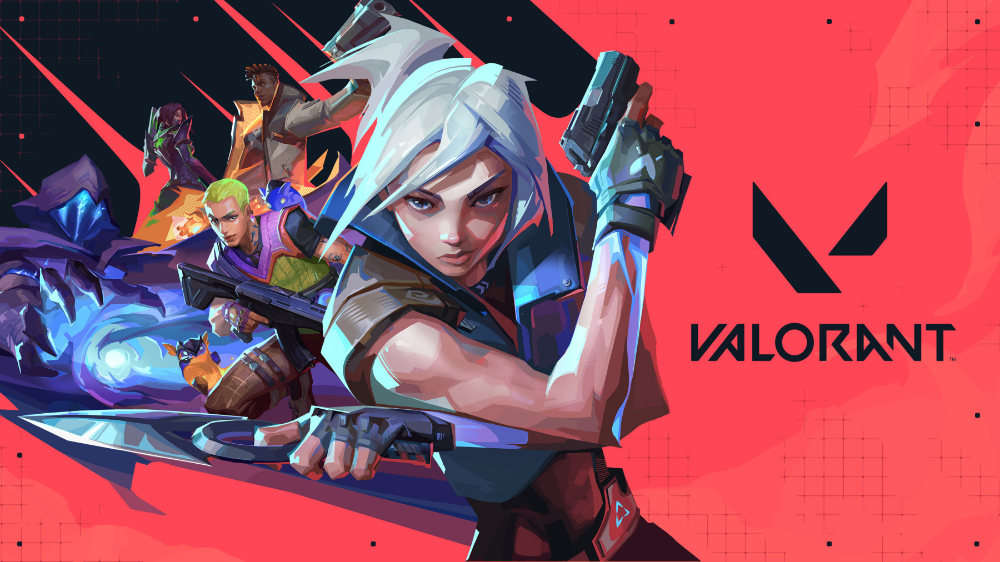
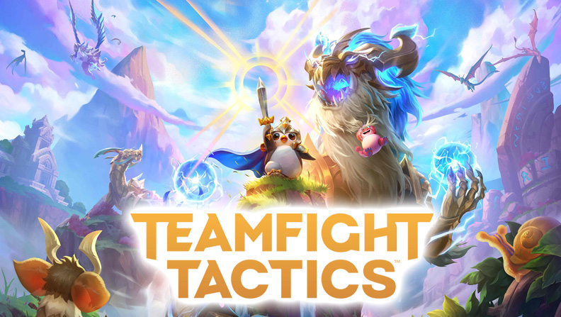
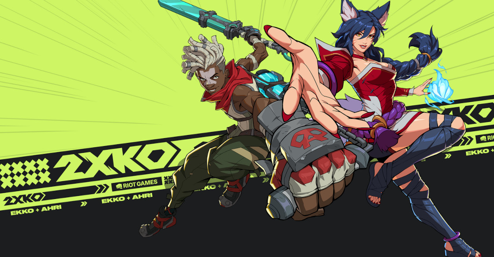

Player experience first
Step into the RIOT MULTIVERSE
Riot Games creates stylish, competitive, and community-driven experiences across multiple genres. From MOBAs to tactical shooters, auto battlers, card strategy, and tag fighters, every title is built around mastery, identity, and long-term replayability.
About Riot Games
Competitive worlds with distinct visual identity
Riot Games is known for building games that reward strategy, adaptation, and mastery over time. Across every genre, Riot combines polished art direction, recognizable characters, evolving gameplay, and strong community culture.
Why Riot stands out
Riot’s games are designed to keep players invested for years. They are not built around one quick experience, but around systems that deepen over time: stronger game knowledge, sharper decision-making, better teamwork, and an evolving competitive scene.
Their titles also stand out visually. Each game feels like part of the same larger creative universe, yet still has its own mood, genre language, and color identity.
Core strengths
- Strong genre variety
- Distinct visual branding
- Live-service content updates
- Deep competitive gameplay
At a glance
- GenresMOBA, FPS, autobattler, card, fighter
- IdentityStylized, competitive, community-driven
- AudienceCasual to highly competitive players
- LegacyGames + esports + worldbuilding
Game lineup
Explore Riot’s major titles
Each game below now includes two expandable sections: one for a more detailed gameplay explanation and one for featured characters.

MOBA
League of Legends
Riot’s flagship five-versus-five MOBA built around champion mastery, lane roles, objective control, and coordinated team fights on Summoner’s Rift.
Deep Dive
In League of Legends, two teams of five battle to destroy the enemy Nexus. Matches are played on a three-lane map with jungle spaces between lanes, and each role contributes differently to the team’s success.
The five standard roles are:
- Top: usually durable fighters or tanks who hold pressure in a side lane.
- Jungle: roams the map, secures neutral objectives, and creates gank opportunities.
- Mid: central damage or playmaking role that can influence the whole map quickly.
- ADC: a scaling ranged carry focused on sustained damage in late fights.
- Support: protects teammates, provides utility, and controls vision.
Winning requires balancing gold income, wave control, vision, dragons, Baron, turret pressure, and teamfight execution. The depth of League comes from adaptation: champion matchups, item paths, and team compositions can completely shift how each game should be played.
Characters
Jinx
Chaotic marksman
Ahri
Nine-tailed mage
Yasuo
Wind swordsman
Lux
Light mage
Garen
Frontline fighter

Tactical FPS
VALORANT
A five-versus-five tactical shooter where precise gunplay, communication, economy management, and agent utility all shape the outcome of each round.
Deep Dive
VALORANT is structured around attacker and defender rounds. Attackers try to plant the spike and defend it until it detonates. Defenders stop the plant or defuse the spike if it goes down.
Before every round, players enter a buy phase where they spend credits on weapons, shields, and abilities. Managing economy is essential because poor spending can weaken the team across multiple rounds.
Teams also switch sides midway through the match, so players must understand both attacking and defending. Ability usage, site control, information gathering, timing, and aim all matter. The best rounds often come from combining utility and positioning instead of relying on aim alone.
Characters
Jett
Agile duelist
Phoenix
Self-healing duelist
Sage
Healing sentinel
Reyna
Snowball duelist
Cypher
Information sentinel

Auto Battler
Teamfight Tactics
A strategy autobattler where players build teams from a shared unit pool, create synergies, equip items, and outlast the rest of the lobby through adaptation.
Deep Dive
In TFT, players buy champions from a rotating shop and place them on a board. Once combat begins, the units fight automatically, so success depends on planning and adapting rather than direct control.
Gold management is one of the biggest systems in the game. Players must decide whether to save, level up, or reroll for stronger units. Three copies of the same champion combine into a stronger version, and building around traits creates powerful team synergies.
Items are also crucial. Players gain components and decide which champions should hold them. Positioning, timing, and reading the lobby are all part of mastering TFT.
Characters
Poro
Little Legend icon
Pengu
Fan-favorite mascot
Choncc
Large Little Legend
Various Champions
Set-dependent roster

Digital Card Game
Legends of Runeterra
A strategy card game set in the League universe, combining champions, spells, and regional identities into a more dynamic deckbuilding experience.
Deep Dive
Legends of Runeterra is built around decks shaped by different regions of Runeterra, each with its own mechanics and playstyle. Players build strategies using units, spells, champions, and synergies between card effects.
Champions are the centerpiece of many decks. They often level up during a match when specific conditions are met, creating strong power spikes and changing how the game is played.
The game rewards planning, sequencing, resource management, and predicting the opponent’s options. It feels strategic and reactive rather than purely luck-driven.
Characters
Jinx
Explosive champion
Yasuo
Control-based champion
Lux
Spell-focused champion
Darius
Aggressive finisher

Tag Fighter
2XKO
Riot’s upcoming two-versus-two fighter reimagines League champions inside a fast, stylish, and highly expressive competitive combat system.
Deep Dive
2XKO is a tag-team fighting game where players build a duo and switch between characters to extend combos, create pressure, and control the pace of a match.
Unlike a one-character fighter, tag mechanics add another strategic layer. Players must think about assists, timing, synergy, and when to swap for offense or defense.
The game is designed to look flashy and approachable while still rewarding advanced timing, matchup knowledge, and execution.
Characters
Ekko
Fast striker
Ahri
Agile rushdown
More to come
Roster still expanding
Esports
Riot games are built to be watched as well as played
Riot has shaped modern esports through major tournaments, organized leagues, high-level competition, and communities that treat the game itself as both sport and spectacle.
Why Riot matters in esports
League of Legends and VALORANT sit at the center of Riot’s esports identity. Regional leagues, international championships, team brands, and player storylines make each title feel bigger than the game client alone.
Esports also extends Riot’s cultural reach. It keeps the games visible, creates memorable moments, and gives players a long-term reason to stay invested in evolving metas and rosters.
Future
Upcoming projects and continuing updates
Riot’s worlds keep evolving through new releases, live patches, champion and agent additions, and ongoing player feedback.
2XKO
Riot’s tag fighter shows how the company is still expanding into new genres while staying rooted in familiar characters and strong style.
Public testing
Betas, previews, and test environments give players a role in how Riot balances and improves its games.
Live-service growth
New content, seasonal changes, and mechanical updates keep Riot’s games active rather than static.